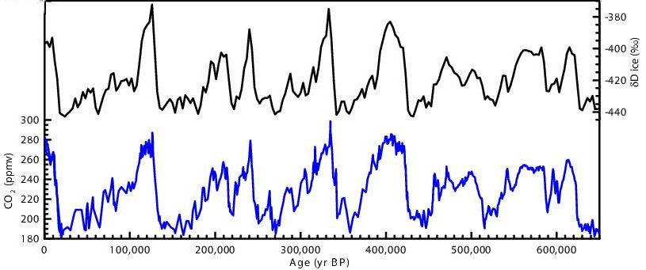
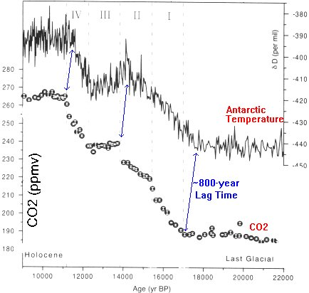
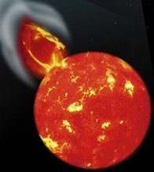

Si vous avez lu avec attention les pages de ce site et, en particulier celles-ci (thèses, glaces et océans , effet de serre, calamités), vous pouvez légitimement éprouver de graves doutes au sujet de tout ce que vous racontent le GIEC, les médias, l'ex Vice-Président-prix-Nobel Al Gore et les écologistes au sujet des causes du bénin réchauffement (+0,6°C/100 ans) que subit actuellement notre planète. Les remèdes proposés par les activistes verts sont bien connus : Croissance zéro, bannissement de l'utilisation des sources d'énergie fossiles, limitation des moyens de transport etc... avec leur cortège d'appauvrissements généralisés dont souffriront surtout les plus pauvres d'entre nous. Bref, on nous prédit un avenir catastrophique !
Au vu des très nombreuses divergences qui se manifestent entre les observations réelles et les affirmations péremptoires ou les pronostics aléatoires et catastrophiques dont commencent même à s'inquièter certains scientifiques tenants de l'effet de serre (voir ici, Mike Hulme) et dont les médias sont actuellement saturés, j'ai pensé qu'il était utile de sélectionner, parmi bien d'autres, quelques points particuliers qui me semblent jeter de sérieux doutes, pour ne pas dire décrédibiliser complètement les affirmations alarmistes des "réchauffistes" de l'effet de serre anthropogénique. Les données qui vont suivre sont tirées de sources avérées dont les auteurs sont incontestablement des spécialistes du sujet. Je citerai mes sources, comme d'habitude. Choisies parmi bien d'autres, voici donc sept très bonnes raisons de douter. Douter, non pas du réchauffement du siècle dernier qui est réel bien que faible, mais des raisons invoquées qui attribuent aux activités humaines une responsabilité cruciale dans cette variation de température somme toute très banale dans l'histoire de la planète.
1) Notre planète a connu des épisodes beaucoup plus riches en CO2 qu'à présent et la vie y était prospère...
Comme chacun le sait, la naissance de la terre remonte à quelques 4,55 milliards d'années. La géologie et, en particulier la paléo-climatologie, c'est à dire l'étude du climat à l'aide des fossiles, nous apprend beaucoup de choses sur les climats qu'a connu notre planète jusqu'à des périodes extrêmement reculées de notre passé. Il a été ainsi possible de remonter jusqu'à 600 Millions d'années avant notre époque. Rappelons que -600 millions d'années correspond à l'apparition (brutale, pense t'on) de la diversité biologique sur la terre. La vie primitive (multicellulaire) existe, elle, depuis environ 1,3 Milliards d'années et l'homme depuis environ 7 Millions d'années (avecToumaï). Nous connaissons maintenant aussi bien l'évolution des températures aux âges les plus reculées que les concentrations de CO2 correspondantes. Voici une superposition (remise à l'échelle des temps) de deux courbes tirées de l'excellente documentation du site de l'ENS-Lyon (Planet-terre). A noter que ces courbes, très difficiles à obtenir, ne sont connues qu'avec de grandes marges d'erreurs.
La courbe du bas résulte des travaux récents de Berner (2003, Nature). Elle représente le taux de CO2 estimé dans notre atmosphère (à 50% près) par rapport à notre époque préindustrielle (taux de CO2 d'environ 280ppm).C'est à dire qu'il y a quelques 520 millions d'années avant notre époque, le taux de CO2 était d'environ 27x280 = 7560 ppm. C'est à dire que notre planète bénéficiait d'un taux de CO2 atmosphérique près de 20 fois plus élevé qu'à présent.
Pour ce qui est de la vie sur terre et pour prendre un repère bien connu, on sait que les dinosaures firent leur apparition il y a environ 230 millions d'années. Ils disparurent brutalement pour des raisons sur lesquelles les chercheurs débattent encore (volcanisme, impact de météorite ?), il y a environ 65 millions d'années. Il suffit de regarder la courbe issue des travaux de Berner pour constater que les dinosaures (végétariens et carnivores) ont vécu avec des taux de CO2 de 4 à 5 fois fois plus élevés que ceux que nous connaissons actuellement. La végétation et la biodiversité étaient particulièrement prospères à cette époque reculée de l'histoire de la terre..
La courbe supérieure qui provient du même site, résulte des travaux de Frakes et al (source). Cette courbe nous apprend que pendant la même période que la courbe précédente, notre planète a connu de nombreux épisodes de réchauffement et de refroidissement sans que l'on puisse discerner une corrélation nette avec la proportion de CO2 atmosphérique pendant cette très longue période. Autrement dit et par exemple, il faisait très froid sur la terre, il y a quelques 420 millions d'années, avec des taux de CO2 atmosphérique de quelques 4200 ppm ! A noter que les dinosaures ont vécu pendant une période un peu plus chaude que celle que nous connaissons actuellement avec des taux de CO2 de 1500 ppm ! Remarquez, comme le font nombre de climatologues "sceptiques du CO2" que les périodes où la terre était plus froide qu'à présent ont été plutôt rares, pendant cette période. On pourrait donc penser qu'il n'est pas étonnant que la terre tende à se réchauffer pour revenir vers sa moyenne en température.
Il est clair, d'après ces graphiques superposés, que d'autres paramètres que la proportion de CO2 dans l'atmosphère, doivent déterminer la température du globe... C'est d'ailleurs bien ainsi que l'entendent de nombreux géologues.
Rapprochons nous un peu dans le temps pour parvenir aux fameux épisodes inter-glaciaires que l'on observe très bien comme une suite d'oscillations rapprochées sur l'extrême droite de la courbe de températures de Frakes et al et qui constituent(aient) l'argument N°1 du célèbre film "une vérité qui dérange" d'Al Gore.
Que nous dit la Science à ce sujet ? Bien entendu et comme nous évoquons une période nettement plus rapprochée de la notre que les millions d'années précédents, nous en savons beaucoup plus. Cette fois-ci, il s'agit, seulement -si j'ose dire- de centaines de milliers d'années avant notre ère. Cette période recouvre une grande partie du quaternaire.
2) Durant les centaines de milliers d'années qui nous ont précédé, l'augmentation du taux de CO2 atmosphérique a toujours suivi (et non précédé) les augmentations de température. C'est le dégazage des océans provoqué par la hausse de la température qui a provoqué l'augmentation du CO2.
Voici une courbe typique représentant les variations du taux de CO2 atmosphérique (en bleu) et une donnée (en noir) équivalente à la température (en termes de variations de température -440-> -8°C et -380 -> +4°C), pendant les quelques 600.000 années précédant notre époque.

Ce genre de courbes, très popularisées par le documentaire d'Al Gore, ont été obtenues à l'aide de carottages réalisées dans différentes parties glacées du globe et notamment à Vostok, en antarctique (voir plus de détails ici ou ici).
La concordance, très apparente, entre les variations de température et les variations du taux de CO2 a été utilisée par Al Gore pour "démontrer" que l'augmentation du taux de CO2 dans l'atmosphère "provoquait" une augmentation de la température de la planète. Malheureusement, le public se fie à son oeil et non à son raisonnement qui pouvait fort bien être inversé. Autrement dit, un public plus averti des choses de la science aurait dû se demander si la relation ne pouvait pas être inversée. Quasi-concomitance ? D'accord. Mais qui est venu en premier ? Le CO2 ou la température ?
En bref, ne serait-ce pas plutôt l'augmentation de température qui provoque l'augmentation du taux de CO2 dans l'atmosphère et non l'inverse ?
Comme on s'y attendait, de nombreux chercheurs se sont penchés sur cette question et les résultats ne se sont pas faits attendre (sources des articles ici. Il y a même un article tout frais de 2007 ! ). Et de fait, toutes les analyses réalisées jusqu'à présent conduisent au même résultat : les variations de température ont toujours précédé les variations du taux de CO2 atmosphérique, avec un délai de 500 ans à 1000 ans ! Ci-dessous, une courbe extraite d'un des nombreux articles parus sur cette question. Ici elle provient de Caillon et al dans Science 2003.
Cette courbe se lit de droite à gauche. C'est à dire que les temps les plus reculés se trouvent sur la droite du dessin. Ainsi, si on part de -22000 ans en allant vers la gauche et donc en se rapprochant de notre époque, on constate que les variations de température se produisent toujours avant les variations de concentrations du CO2. Le temps de retard (lag time) n'est pas négligeable puisqu'il est de 800 ans.
De la même manière, les autres carottages réalisés dans d'autres points du globe, ont montré des retards de la variation du taux de CO2 variant de 400 à 1200 ans, par rapport aux variations de température.
Dans ces conditions et bien que beaucoup s'y soient essayés (comme Al Gore, par exemple), il est impossible de prétendre que c'est l'augmentation du taux de gaz carbonique atmosphérique qui détermine les augmentations de température.
Deux arguments décisifs émergent immédiatement lorsque l'on considère attentivement les courbes de ce type. En effet, les variations de température obtenues à l'aide de différents "proxy" qui sont généralement des isotopes de différents gaz, sont de l'ordre de quelques 8 °C. Ainsi, au vu des courbes ci-contre on constate que le taux de CO2 n'a varié que de 185 ppm à 265 ppm soit une augmentation relative de 43%. Ainsi, si on suit le raisonnement d'Al Gore (et de bien d'autres) devrait-on en déduire immédiatement qu'une telle variation de +43% de CO2 entraîne une hausse de température de quelques +6 à +7 °C...Ce qui est énorme !
Poursuivons le raisonnement :
Ainsi, les courbes de ce type, non seulement ne démontrent pas que le taux de CO2 atmosphérique détermine la température du globe, comme le prétend Al Gore et consorts, mais elles en constituent un excellent contre-exemple ! Elles permettent même de montrer que l'augmentation du taux de CO2 atmosphérique résultait probablement du dégazage des océans.
Ceci dit, rapprochons nous encore de notre époque et arrêtons nous vers l'an mil avant Jésus-Christ et examinons la période de 3000 ans allant de l'an -1000 à l'an +2000.. Cette fois-ci, les données paléo-climatiques, tout comme les mémoires historiques, abondent, et notre connaissance du climat des temps passés est tout à fait convenable.
3) Dans un passé récent, la terre a connu des épisodes plus chauds et plus froids que maintenant sans intervention humaine et du simple fait de la variabilité naturelle.
Le GIEC, lui-même, a publié, jusqu'en 1991, une courbe identique à celle rapportée ici. Si vous avez lu cette page, vous savez que les rapports suivants de cet organisme avaient totalement abandonné cette courbe, pourtant bien étayée par de nombreuses données, au profit de la célèbre courbe en "crosse de hockey" de Mann et al. Cette dernière a été discréditée depuis lors et ne figure plus dans les rapports récents du GIEC.
Pour éviter toute controverse à ce sujet, nous allons partir d'un exemple réel obtenu par des mesures isotopiques des fonds marins de la mer des Sargasses. Cette mer qui couvre une surface de quelques 2 millions de milles carrés dans l'océan atlantique, nous révèle les principales variations de la température au cours des 3000 ans précédents.
Cette courbe "francisée" (source, Science 1996, ici) indique la température de surface de la mer des Sargasses depuis 3000 ans. On y observe très nettement plusieurs périodes chaudes et froides identiques à celles que l'on retrouve dans la plupart des mesures effectuées dans différents points du globe. L'argument qui consiste à dire que ces variations de température n'ont concerné que l'atlantique nord ne tient pas au vu des nombreuses découvertes, réparties sur tout le globe, que le site "CO2 Science" a systématiquement recensé, (au taux d'environ une par semaine !). Il s'agit bien de variations globales.
Le trait horizontal noir sur cette courbe représente la moyenne des températures observées sur la période considérée de 3000 ans. On constate que cette moyenne est légèrement supérieure à celle qui a été mesurée en 2006. On voit immédiatement que la température actuelle de la surface des océans ne constitue en rien une anomalie par rapport aux trois millénaires précédents. D'autre part et conformément à l'unanimité des observations (à l'exception de la courbe en crosse de hockey de Mann et al), on distingue l'optimum médiéval qui est une période chaude pendant laquelle les Vikings ont colonisé le Groenland (voir ici) et où les peuples d'angleterre cultivaient la vigne. On observe aussi nettement la période froide du petit âge glaciaire dont notre époque présente semble se relever peu à peu. C'est pendant cette période froide que la Seine et la Tamise gelaient tous les hivers.
Voici un autre document qui concerne cette fois-ci les températures relevées à l'aide des carottages glaciaires au Groenland de -3000 à 1990 (environ). Ce graphique résulte des forages du GISP2-ice-core et d'un article de Grootes P. M. et al dans Nature (1993, 366, 552-554). On le trouve dans cet article du professeur Robert Carter.
Sur ce graphique les zones vertes rappellent les périodes plutôt chaudes et qui nous sont connues du point de vue historique.
On retrouve la séquence des périodes chaudes et prospères des civilisations Minoéennes (-1400 ), Romaines (-150), Médiévales (+900) et ...finalement la nôtre, précédée par le petit âge glaciaire auquel notre période semble avoir mis fin.
Ainsi, lorsque l'on considère la période actuelle dans une perspective historique des cinq mille dernières années, est-on conduit à affiner son jugement :
A l'évidence, la période actuelle ne représente rien de particulier par rapport aux variations climatiques précédentes ! On constate que le réchauffement actuel n'a même pas atteint les records des périodes Minoéenne, Romaine et Médiévale qui sont, comme vous le savez, des périodes fastes dans l'histoire de notre planète.
Il va de soi que le CO2 généré par les activités humaines que l'on invoque constamment n'a rien à voir, tout comme dans les époques précédentes, avec ces fluctuations importantes (de l'ordre de + ou - 2°C) de la température qu'a connu récemment notre planète. A noter que la période froide du petit âge glaciaire correspond à une quasi-extinction, pendant quelques 60 ans, de l'activité éruptive solaire. C'est ce que l'on appelle le minimum de Maunder. Cette page vous donnera toutes les explications nécessaires sur les relations probables entre l'activité solaire et la température du globe. Ainsi, prétendre que de nos jours, l'activité humaine est entièrement responsable des variations de température, comme le font les politiques du GIEC et ses zélotes, relève tout simplement de la méconnaissance du climat des temps passés. De fait, une chose est certaine : Les températures et les climats ont constamment varié au cours de l'histoire de notre planète et il n'y a aucune raison qu'ils cessent le faire...
4) Le recul des glaciers et la hausse du niveau des océans ont commencé bien avant et ne sont pas affectés par l'augmentation du taux de CO2 qui provient de l'utilisation des énergies fossiles par l'homme.
Les médias, friands de nouvelles alarmistes, se font l'écho des nouvelles les plus catastrophiques qui nous annoncent que les glaciers fondent à vitesse accélérée et que les mers montent au point de nous menacer d'engloutissement à brève échéance. Les choses seraient pires que prévues, selon certains...Entre autres, Al Gore et James Hansen nous promettent une montée des eaux de quelques 6 mètres ! Le GIEC, lui est plus mesuré. Il prévoit une montée de seulement +42cm en 100 ans...
Mais que nous disent les mesures réelles du recul des glaciers et de la montée du niveau des mers ? Et surtout, comment ces évolutions s'inscrivent t'elle dans la perspective historique ?
C'est un fait avéré : Le niveau des océans monte lentement (environ 1, 3 mm/an, voir ici). De même, on constate que les glaciers du monde reculent lentement, autrement dit, fondent tout aussi lentement, depuis l'année 1820, environ. Pour nous faire une idée précise, voici une courbe tirée (et francisée) de cet article (vous y trouverez les sources de la littérature scientifique nécessaires à l'établissement de ces courbes) .
En abscisse, l'échelle des années de 1700 à aujourd'hui. En bas à droite de cette courbe sont indiquées les consommations d'énergie fossile par les hommes (charbon =coal (gris), oil=pétrole (bleu) et gas=gaz (rose)) cumulées en fonction du temps. L'échelle est en bas à droite en milliards de tonnes de carbone.
La courbe en bleu représente en unités convenables, le recul des glaciers en fonction du temps (échelle à gauche). On observe deux faits importants :
La courbe hachurée (bruitée, comme l'on dit) en noir, représente la hausse du niveau des mers. Elle correspond à l'échelle "sea level" en haut à droite. Après une baisse de niveau due sans doute à la fin du petit âge glaciaire, les océans ont commencé à monter à partir de 1850 mais là encore, on n'observe aucune variation de régime lors de l'accroissement considérable de l'utilisation des énergies fossiles à partir de 1950. La vitesse de montée des océans est restée constante durant toute cette période. C'est d'ailleurs, très exactement ce qu'a dit le GIEC dans son dernier rapport, ici.
En résumé, on n'observe aucune variation dans les tendances historiques de la hausse du niveau des mers ou du recul des glaciers alors que la consommation des énergies fossiles a été multipliée par 6 par rapport à la période antérieure.
La seule considération de ces courbes tirées de la littérature scientifique devrait faire réfléchir ceux qui soutiennent que le niveau des océans s'élève et que les glaciers fondent à cause de la consommation d'énergie fossile !
5) La signature de l'effet de serre du CO2 ne se trouve pas dans l'atmosphère et cette dernière se réchauffe 10 fois moins vite que prévu, en contradiction avec tous les modèles !
Tous les modèles d'ordinateurs de l'effet de serre du CO2 conduisent, à quelques variantes près, à la conclusion que la partie supérieure de la troposphère, juste en dessous de la tropopause (soit vers 10 km d'altitude), devrait se réchauffer de manière notable. J'ai déjà évoqué cette question ici avec un peu plus de détails mais en voici un résumé.
Richard Lindzen, climatologue physicien renommé du Massachussets Institute of Technology a récemment produit les quatre diagrammes suivant, lors d'une conférence donnée à l'Institute of Physics de Londres (IOP, Juin 2007). Ces diagrammes se lisent aisément.
En abscisse sont reportées les latitudes en degrés. EQ signifie l'équateur. Par exemple, 30S signifie 30° Sud. L'échelle verticale représente l'altitude de la couche atmosphérique indiquée en mesures de pression atmosphérique. On sait que 200 hpa correspond à peu près à une altitude de 10 km au dessus du sol. 950 hpa se trouve tout près de la surface terrestre.
En dessous de ces quatre diagrammes, on trouve l'échelle des couleurs classique qui mesure les températures. Cette échelle est basée sur les couleurs de l'arc en ciel (violet, indigo, bleu,, vert, orangé, rouge). Le violet indique -7°Kelvin (équivalents ici aux degrés centigrades). Le rouge indique +7°K (ou °C).
Ces diagrammes qui résultent de quatre très récents (en 2007) modèles d'ordinateurs de l'effet de serre montrent de manière unanime qu'une zone de l'atmosphère située au dessus de l'équateur et des tropiques, aux environs de 10 km d'altitude, devrait se réchauffer notablement du fait de l'effet de serre. C'est ce que les climatologues appellent le "Hotspot". Si les estimations des températures de cette zone différent d'un modèle à l'autre, leur coloration indique que la température devrait y être d'environ de 2 à 5°K (ou °C) supérieure à celle des zones latérales plus claires qui figurent sur ce diagramme. Cette différence devrait être très facilement perçue par les mesures sophistiquées opérées par satellites et ballons sondes. Remarquez, au passage, que les modèles prévoient des élévations de température identiques au dessus des pôles Nord et Sud de la terre. Ceci est contraire aux observations qui nous disent que le pôle Nord se réchauffe beaucoup plus que l'Antarctique qui, lui, se refroidit !
Que nous disent les mesures réelles prises dans l'atmosphère ?
Un diagramme vaut mieux qu'un long discours... Le voici à droite :
A gauche l'échelle des pressions en hpa, comme ci-dessus. A droite l'altitude est en km. L'échelle des couleurs est la même que dans les diagrammes ci-dessus mais le rendu des couleurs n'est pas aussi bon que sur l'original.
Ce diagramme qui figure dans le rapport du GIEC, provient du "HadAT2 radiosonde observations, du CCSP (2006), p. 116, fig. 5.7E"
Il n'est pas nécessaire d'être un climatologue averti pour observer que le fameux "Hotspot" est résolument absent de cette image. La zone où devrait être observé le Hotspot aurait même plutôt tendance à être plutôt plus froide que son environnement...Cette observation a eu deux conséquences immédiates. L'une très sérieuse, l'autre un peu amusante.
Tout d'abord, le Professeur Lindzen en déduit que les modèles d'ordinateurs de l'effet de serre ont surestimé d'un facteur au moins de 3 à 4 le paramètre N°1 de l'effet de serre que l'on appelle "la sensibilité". La sensibilité correspond à l'augmentation de la température terrestre dû au doublement de la concentration en gaz carbonique. Diviser ce facteur par trois ou quatre revient à dire que l'effet de serre aura des conséquences négligeables en terme d'élévation de température.
D'autre part, et avec un zest d'ironie, Ross MacKitrick a proposé (source) que les éventuelles taxes carbones soient indexées sur la température du Hotspot. Cette proposition tient la route car, seuls les gaz à effets de serre sont capables (d'après les ordinateurs du GIEC) de fournir cette unique signature ! Qu'ils ne fournissent pas !
Tout récemment (9 Déc. 07) , un article vient de paraître en deux versions, l'une à l'International Journal of Climatology ( D. H. Douglass, J. R. Christy, B. D. Pearson et S. F. Singer, 2007, DOI : 10.1002/joc.1651) , l'autre au Geophysical Research Letters. Ils confirment exactement les diagrammes ci-dessus. (source) Voici une courbe extraite d'un de ces articles :

7) Et surtout, surtout, il existe un modèle beaucoup plus convaincant que celui de l'effet de serre anthropogénique, sans modèles d'ordinateurs, pour expliquer les variations de température :
Celui de l'activité solaire !
Vous trouverez ici de nombreuses informations sur cette thèse qui gagne actuellement en audience du fait de la multitude des observations positives et concordantes réalisées dans de nombreux points du globe. En bref, l'activité éruptive solaire, qui se produit de manière cyclique tous les onze ans, provoque de puissants orages magnétiques qui ont la propriété de dévier les rayons cosmiques (venus de l'extérieur de la galaxie) qui, pense t'on, ont eux-mêmes la capacité de modifier l'ennuagement de la planète et ainsi, de faire varier sa température. Les cycles de 11 ans se retrouvent sur terre dans une multitude de traceurs allant des anneaux de croissance des arbres aux fossiles marins en passant par les mesures du niveau du Nil et des grands lacs africains ainsi que de l'ennuagement au dessus de l'angleterre, parmi des dizaines d'autres.
Je ne vais pas vous détailler ici les tenants et les aboutissants de cette thèse qui a été suggérée dès l'année 1801 par un observateur de génie (Sir William Herschell) et en faveur de laquelle les observations positives s'accumulent, de nos jours, à vitesse accélérée. J'y ai consacré cette page qui vous en apprendra beaucoup et qui vous donnera aussi les sources nécessaires. L'accumulation des données en faveur de cette thèse est absolument étonnante. Il est très curieux, pour ne pas dire plus, qu'elle soit totalement passée sous silence par le GIEC dont la mission est d'étudier les facteurs qui influencent le climat. Et ceci d'autant plus qu'un vaste projet international, richement doté, et appelé CLOUD est actuellement en cours au CERN de Genève sur ce sujet...
Je me contenterai simplement ici de rappeler une courbe très récente (octobre 2007) publiée par les Professeurs Svensmark et Friis-Christensen, qui montre la stupéfiante corrélation qui existe entre les taux de rayons cosmiques impactant la planète et les températures de la basse atmosphère ou de la terre si l'on veut. Et ceci, sans aucun modèle d'ordinateur ! Seulement en introduisant les corrections destinées à annuler les effets des explosions volcaniques comme le Pinatubo, du réchauffement dû à El Niño ainsi qu'une légère croissance constante de la température. La voici :
A gauche, l'échelle indique les variations de température de la basse atmosphère mesurée à l'aide des données satellitaires et des ballons sondes. Cette échelle correspond à la courbe en bleu.
A droite, correspondant à la courbe en rouge, l'échelle donne les variations du taux de radiations cosmiques parvenant sur le terre, plus ou moins déviées par les éruptions solaires.
Avouez que la corrélation entre les radiations cosmiques et les températures (de 1958 à 2006), est étonnante, Non ?
Si cela vous donne envie d'en savoir beaucoup plus sur cette question, allez voir la seconde partie de cette page, qui est très détaillée. Vous y verrez que la corrélation (activité solaire-climat) fonctionne depuis des temps immémoriaux comme cela se voit dans un très grand nombre de très diverses observations.
En abscisse, l'altitude ou la pression atmosphérique..
En ordonnée, les écarts de températures prévues par les différents modèles d'ordinateurs (en rouge) et les températures réellement mesurées (en bleu-vert). L'atmosphère ne se réchauffe pas comme prévu ! Loin de là . Où est passé l'effet de serre du CO2 ?
En dessous, les noms des différents modèles et des mesures satellitaires ou par ballon.
Voilà qui donnera du fil à retordre à ceux qui s'efforcent de bricoler les codes de couleurs des diagrammes précédents pour essayer de réconcilier les mesures et leurs modèles...Ils auront plus de mal à déplacer les points.
Comme précédemment, on observe un rapport entre 2 et 3,5 entre les mesures réelles et les simulations numériques. D'autre part, entre 8 et 10km d'altitude, la réalité indique une variation de température de signe opposé à celui des modèles.
Dans n'importe quelle discipline autre que la climatologie, cet énorme écart prévision-réalité, remettrait gravement en cause les modèles théoriques de l'effet de serre... Mais pas ici !
Mise à jour 09/06/2008 : A côté de ces données expérimentales qui proviennent essentiellement des satellites de la NASA utilisés par l' UAH et le RSS et qui analysent les rayonnements, il existe un autre système de mesures utilisé par le Hadley Center anglais. Celui-ci se sert presqu'exclusivement de ballons-sondes équipés de radio-sondes qui enregistrent, en même temps, les vitesses et directions du vent et, bien sûr l'altitude et la température. Les résultats sont relayés en permanence par radio aux stations réceptrices. On voit pas très bien ce que l'on pourrait reprocher à ce genre de dispositif expérimental ultra-simple qui d'ailleurs conduit à des résultats parfaitement cohérents avec ceux de satellites.
L'avantage de ces mesures par ballons, c'est qu'elles sont plus directes que les mesures par satellites car elles ne nécessitent pratiquement pas de corrections ou d'analyse. Elle ont aussi précédé les mesures par satellites (commencées en 1979) de quelques dizaines d'années. Voici donc un graphe très parlant, issu des ces mesures par ballon du Hadley Center UK, collectées jusqu'en Mars 2008.
6) La loi en logarithme qui relie l'élévation de température au taux de CO2 existant dans l'atmosphère implique que tout ajout de CO2 supplémentaire par rapport à celui que nous connaissons aujourd'hui, ne peut induire qu'un très faible réchauffement supplémentaire.
Cette partie est inspirée d'un article rédigé par le Professeur R. M. Carter (voir paroles).
Si l'effet de serre dû au CO2 que nous propulsons inconsidérément (comme disent les écologistes et Al Gore) dans l'atmosphère est perceptible, son amplitude est régi par une loi en logarithme bien connue, déjà du temps d'Arrhénius. Cette loi indique que l'élévation de température du globe est proportionnelle au logarithme du rapport entre le taux de CO2 existant sur le taux de CO2 existant à une période antérieure. Ainsi Delta T est proportionnel à log (CO2/CO2 initial). Pour un doublement du taux de CO2 par rapport à l'ère préindustrielle, censé être atteint à la fin du siècle malgré la disparition des réserves de pétrole que l'on prédit pour 50 ans, Delta T est proportionnel à log2.
Si on applique cette loi avec les paramètres connus actuellement, on en déduit la figure suivante, reproduite par le Professeur Carter :
Cette courbe est établie en indiquant en ordonnées le forçage dû au CO2 mesuré en Watt/m2. On admet qu'un watt/m2 réchauffe la planète d'environ 0,3°C. Ainsi et au vu de cette courbe, on constate immédiatement que le forçage radiatif essentiel (c'est à dire de 0 à 280 ppm de CO2, donc avant l'ère industrielle) est responsable de l'essentiel du réchauffement de la planète.
Si on part du trait rouge vertical qui indique le début de l'ère industrielle, on observe que le passage au trait noir (de nos jours) correspond à une très faible augmentation de la température, en fait de +0,6°C tels que nous le constatons et si la théorie de l'effet de serre est exacte.
On observe aussi immédiatement qu'un doublement du taux de CO2 soi-disant obtenu à la fin du siècle (560 ppm) n'apportera qu'une élévation de température très minime, de l'ordre de 0,2 à 0,4 °C. Et non pas de +2 à +6°C comme le prédisent les ordinateurs du GIEC...
Alors, d'où provient cette grande différence entre les projections des ordinateurs du GIEC (de +2 à +6°C) et celles qui dérivent de cette courbe (soit +0,4°C)?
Tout simplement du fait que les projections du GIEC sont établies "à priori" à partir de modèles complexes aux multiples paramètres inconnus. Nous, nous partons de la réalité objective, c'est à dire du réchauffement réellement observé sur la planète depuis environ un siècle....
Avouez qu'il y a de quoi se poser de sérieuses questions. N'est-ce pas ?
Résumé et Conclusion :
La thèse du réchauffement anthropogénique, c'est à dire due aux gaz à effets de serre comme le CO2 qui est un sous-produit de la combustion des énergies fossiles, souffre de nombreuses incohérences :
Si nous remontons jusqu'aux temps les plus reculés de l'histoire de notre planète (jusqu'à -600 millions d'années), nous constatons que les taux de CO2 dans l'atmosphère ont été beaucoup plus élevés que ceux que nous connaissons maintenant avec une vie, une biodiversité et une végétation florissantes et alors que la terre se réchauffait ou se refroidissait alternativement sans lien apparent avec le taux de CO2 atmosphérique.
L'épisode inter-glaciaire qui couvre la période de -600.000 ans jusqu'à nos jours est particulièrement instructif parce qu'il a servi de cheval de bataille aux tenants du réchauffement anthropogénique. L'examen de ces courbes et des valeurs associées montrent que le taux de CO2 atmosphérique n'a jamais déterminé la température de notre planète mais bien au contraire qu'il en est la conséquence directe.
L'examen des variations de températures qu'a connues la planète depuis quelques 5000 ans nous montre que le réchauffement actuel ne se distingue en rien des réchauffements qui ont précédé et auxquels, évidemment, l'homme n'a pas participé. Ce réchauffement actuel peut donc fort bien être totalement ou en grande partie, naturel.
La hausse bénigne du niveau des mers tout comme le recul des glaciers amorcés depuis le début du XIXème siècle avant l'utilisation des énergies fossiles, se poursuivent actuellement à un rythme constant sans que l'on puisse déceler la moindre accélération liée à la multiplication (par 6 ou 7) des émissions de CO2 anthropiques.
La signature incontournable dans l'atmosphère, prévue par tous les modèles d'effet de serre, ne s'y trouve pas. Les écarts entre les modèles d'ordinateur de l'effet de serre et les mesures réelles sont tels que ces modèles sont carrément démentis par la réalité objective.
Compte tenu de la loi en logarithme et de la hausse des températures de +0,6°C déjà observée pour un accroissement de 280 ppm à 380ppm, l'ajout de CO2 supplémentaire ne peut induire qu'une très faible augmentation de température.
Enfin, il existe une alternative beaucoup plus crédible, absolument naturelle, soutenue par un très grand nombre d'observations expérimentales, pour expliquer les variations de température que connaît notre planète, maintenant et depuis de nombreux siècles : Tout simplement, les variations de l'activité solaire. Et comme on sait que l'activité solaire de ce dernier siècle a été la plus intense depuis 6000 ans... Voir cette page.
A suivre
Mis à jour le 09/06/2008
Comme on le voit, les mesures rapportées couvrent pratiquement 50 ans. Elle indiquent,en ordonnées et en degrés Celsius, la tendance (par rapport au zéro indiqué) de la température de la haute troposphère (environ 11 km d'altitude) située au dessus des tropiques. C'est à dire exactement au point "Hotspot" qui selon les modélisations de l'effet de serre, chères au GIEC et à ses thuriféraires, devrait indiquer une hausse de température pendant cette période de l'ordre de 1,5°C à 2°C (au moins !). (N'oubliez pas que la base de la théorie de "l'effet de serre" exige que l'atmosphère chargée de CO2 et de vapeur d'eau s'échauffe nettement plus vite que la planète ; Sinon, plus d'effet de "pullover" comme ils aiment à dire ..).
Or, un simple coup d'oeil sur ce graphique indique immédiatement que cette partie, particulièrement sensible, de la troposphère ne s'est pratiquement pas réchauffée depuis au moins cinquante ans ! On peut lui accorder un misérable 0,15 à 0,2°C, si on est très généreux. Ce qui donne un ordre de grandeur plus petit que les prévisions des modèles. Et cela ne va pas aller en s'améliorant comme on le voit à la droite de la courbe qui plonge vers le bas, surtout quand on sait que les températures terrestres ont atteint un minimum rare en Mai (qui n'est pas encore rapporté par le Hadley)...
Il est évident pour tout chercheur honnête, que ce genre de courbe porte un coup mortel aux modèles d' effets de serre. Le seul moyen, crédible, restant aux réchauffistes pour se tirer de ce mauvais pas, serait de prouver que les mesures par ballons et par satelllites sont, toutes deux, entachées d'erreur...
Ce n'est pas ce qu'il font. Ils viennent de sortir un article (dans Nature Geophysics par Steven Sherwood and Robert Allen (Yale University) qui montre que les vents sont cohérents avec les températures (projetées mais non mesurées) de cette partie de l'atmosphère. En gros, au mieux, ils ont démontré que leurs modèles étaient en partie cohérents ... Mais ils n'ont toujours pas expliqué pourquoi les mesures de température n'ont rien à voir avec les prédictions. C'est pourtant ce que tout bon scientifique chercherait à faire...
Les médias, eux, toujours à la pointe de la désinformation, ont affirmé que ces chercheurs avaient résolu le problème posé par les températures de la haute troposphère... Ce qui n'est vraiment pas le cas : Un ordre de grandeur en physique, c'est énorme...
Sept bonnes raisons de douter de l'effet de serre anthropogénique
(mis à jour le 09/06/2008 )